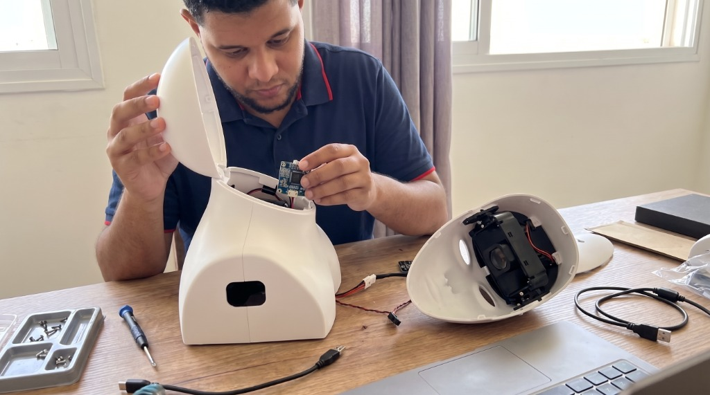

Projects
Building real-world applications
Clinical AI research frameworks, edge-optimized deep learning models, and computer vision systems bridging academic research with real-world applications.

perception · computer vision · edge ai
Project statistics and pillars
Real-Time
Multimodal Perception.
Real-time multimodal models for understanding the enviroment, people and the context around
them.
Social Behavior
Understanding.
Analyzing human engagement, conversational dynamics, and non-verbal signals through computer vision
and interactive robotics.
Clinical AI &
Real-World Impact.
Applying machine learning and behavioral modeling to clinical assessment, diagnostic support, and
human healthcare.
Projects.
Explore clinical research pipelines directly linked to academic publications alongside applied engineering systems and open-source toolkits.
Loading projects…
Collaboration & Innovation
Have a project
in mind?
Whether you're developing clinical AI architectures, multimodal prototypes, or exploratory generative systems, let's explore how we can collaborate.
Start an inquiry